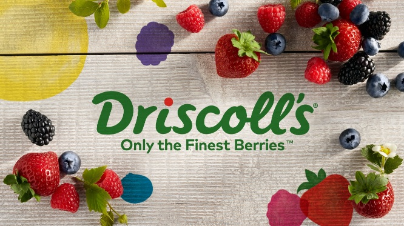

En Driscoll's queremos seguir mejorando nuestro ambiente laboral y la operación del área de embarques.
El objetivo de esta encuesta es conocer tu experiencia durante la temporada 2025-2026. Tus respuestas serán completamente anónimas y confidenciales.